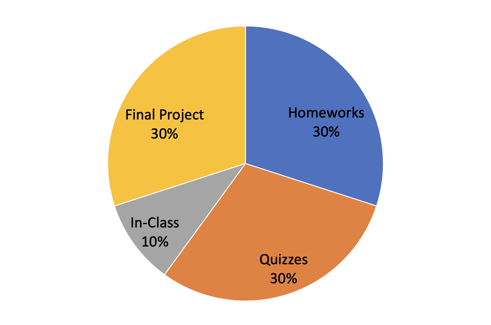

Discrete Structures
TR 11:15-12:30
Wilson 405
Instructors and Office Hours

Dr. Ab Mosca (they/them)
Contact
amosca@westfield.ma.edu
Office Hours
Wilson Hall 325
Wednesday 09:30 - 11:00
Thursday 14:30 - 16:30
By appointment
You are welcome to come to office hours with questions about course content, data/computer science in general, research, jobs, or just to chat! All of these are perfectly appropriate uses of this time.
Course Schedule
(subject to change as needed)
Assignments are due BEFORE class on the day listed
Course Overview and Policies
Description
This course serves as an introduction to discrete mathematics. Topics will include Boolean algebra and logic, proof techniques, sets, relations and functions, counting, sequences, and graph theory.
Learning Outcomes
By the end of this course students will be able to:- Logically prove mathematical statements
- Model scenarios combinatorically
- Describe functions, relations, and sequences
- Model scenarios graphically
Textbook
The textbook for this class is Discrete Mathematics: An Open Introduction, 3rd edition. It is available online free of charge: https://discrete.openmathbooks.org/dmoi3/dmoi.html, and a hard copy can be purchased.
If purchasing causes financial strain please come see me so that we can make alternative arrangements.
Assignments
All assignments will be submitted through Gradescope: https://www.gradescope.com/courses/678543
Entry code: ZWKY85
There are a variety of assignments in this class: Homeworks, Quizzes, In-Class Activities, and a Final Project. The purpose of this is provide as many ways as possible for students to demonstrate mastery of material.
Homeworks
Homework is a chance to demonstrate knowledge of topics covered in lecture and receive feedback. See rubrics for grading guidelines.
Quizzes
Quizzes are an opportunity for students to demonstrate understanding of topics covered in class. Quizzes will be on Gradescope and auto-graded. Students may re-take a quiz as many times as wanted before the deadline.
In-Class Activities
In-class activities are an opportunity to collaboratively practice new material covered in class with classmates and the instructor. Grades for in-class activities will be largely effort based.
Final Projects
Final projects present the opportunity for students to apply the programming techniques covered in class to a topic of interest to them. This assignment will be completed in groups. Grading will look at technical details, creativity, and communication.
Late Policy
All assignments are due as listed on the Course Schedule. There is a 24 hour gace period for late submissions, however you must be in class that day (or excused beforehand) and after the grace period late assignments will not be accepted.
If you have extenuating circumstances and need a more significant extension that is okay, however it is your responsibility to email Ab BEFORE the assignment is due to make arrangements.
Your lowest homework grade will be dropped.
Regrades
There will be no regrades on assignments. However, if you are unhappy with a grade on an assignment you may re-do the portions you did not do well on and resubmit the assignment. The rules for resubmitting assignments are as follows:
- You may not resubmitt and assignment on which you received a 0.
- Your resubmission must note where changes were made and explain how the changes address the feedback you received on your first submission.
- Your resubmission must include a thoughtful paragraph explaining what you learned from re-doing your assignment and how you will incorporate those lessons into future assignments.
- You may only resubmit within 2 weeks of receiving a grade on an assignment.
Final Grades
Your grade will be a weighted average of all assignments, as shown below.
Assignment Weights
We will round decimals to the nearest whole number and assign letter grades as follows:

Classroom Conduct
All students and teaching staff are expected to treat each other with kindness and consideration. Equity and inclusivity are priorities in this class, and centering those systematically marginalized in higher ed and STEM will be a priority. If you have any requests or feedback, please reach out to Ab.
Academic Integrity
While students are encouraged to discuss course materials, no plagiarism/copying is allowed. In particular:
- You may not copy anyone else's text, source code, images, videos, visualization designs, or slides under any circumstances. This includes online sources.
- You may not permit any other student to see any part of your program or writing assignment.
- You may not permit yourself to see any part of another student's program or writing assignment.
You may consult online resources as part of your coursework, but you may not copy code from online sources. If you get an idea of how to solve a problem from an online source, include a citation in a code block at the top of your script. Ex.:
'''
DS2001
Practicum 2
MyName
Consulted stackoverflow for rounding:
https://stackoverflow.com/questions/20457038/how-to-round-to-2-decimals-with-python
'''
You do not need to include a similar notation if you consulted with a classmate; we expect that. Just don't share code.
ChatGPT may by used as a spelling/grammar checker (with citation), but may not be used to perform the intellectual tasks required to complete an assignment. In other words, your writing and code must be your own, not generated by ChatGPT.
If you have a question about what is considered a violation of this policy, please ask!
You can find the university's academic integrity policy here: https://catalog.westfield.ma.edu/content.php?catoid=35&navoid=1642.
Students with Disabilities
Students with disabilities who wish to receive academic services and/or accommodations should contact Disability Services. If you have already done so, please provide your letter for accommodations to Ab early in the semester so they can arrange those accommodations.
A note to all students
I (Ab) am here to support you. If at any point in the semester you realize there is something I could do to better support you, please reach out. This can be something as small as letting me know I am not making the font big enough on my presentations, to sharing that you need some help getting caught up after a hard day or week.
Please be respectful of your classmates and instructor's wellbeing. You should not come to class if you are not feeling well. This includes COVID symptoms, and symptoms of non-COVID illnesses. If you need to miss class, I will work with you to stay caught up.